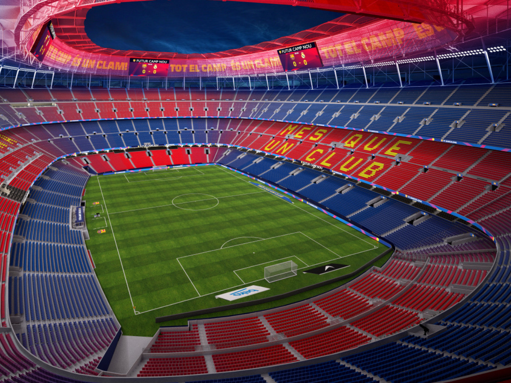

Historia del Club
El Barcelona FC, fundado en 1899, es uno de los clubes de fútbol más prestigiosos del mundo. A lo largo de su historia, el Barcelona ha ganado numerosos títulos nacionales e internacionales, incluyendo La Liga, la Copa del Rey y la Liga de Campeones de la UEFA.
Logros Destacados
- 26 títulos de La Liga
- 31 títulos de la Copa del Rey
- 5 títulos de la Liga de Campeones de la UEFA
- 4 títulos del Mundial de Clubes
- 3 títulos de la Supercopa de Europa

Estadio Camp Nou
El Camp Nou es el estadio del Barcelona FC y tiene una capacidad de más de 99,000 espectadores. Es uno de los estadios más grandes del mundo y ha sido sede de numerosos partidos y finales de alto nivel.
